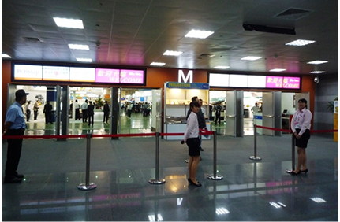

展館介紹
台北南港展覽館2館即時的最新消息
台北南港展覽館1館的綠色環保措施
台北南港展覽館1館基於愛護自然環境，積極取得台灣第一座綠建築標章的展覽館，也是台灣第一個依照國際標準完成温室氣體查證的場館，以實際行動支持政府推動節能減碳政策方針，從掌握場館碳排放到綠色環保營運及多項綠色環保措施，期待與業界及訪客共同攜手創造永續環境。
- 綠建築標章：台北南港展覽館1館通過「基地綠化」、「基地保水」、「日常節能」、「二氧化碳減量」、「室內環境」、「水資源」、「污水垃圾改善」等7項指標，獲內政部頒發綠建築標章。
- 碳盤查：南港展覽館於2009及2011年依照國際標準完成溫室氣體排放量查證，並取得英國標準協會 (The British Standards Institution, BSI)ISO14064-1碳盤查認證。
綠色營運
- 展覽期間鼓勵展覽主辦單位展場走道不鋪設地毯。
- 鼓勵參展廠商及設計業者，減少木作裝潢，採重覆使用之系統攤位，減少製造裝潢廢棄物，同時達到資源重複利用(Reuse)及循環使用(Recycle)的節能環保概念。
- 南港展覽館部分紙類宣傳品採雙面印刷。
- 於館內廊道多處放置資源回收桶。
- 於B1用餐區放置廚餘回收桶。
- 全館洗手間馬桶及小便斗沖水使用雨水回收水。
- 洗手間裝設感應式水龍頭，降低洗手用水。
- 設置冷熱水飲水機取代塑膠杯水或瓶裝水。
- 非展覽/活動期間不開啟電扶梯，僅以電梯載客。
綠色顧客服務
- 於南港展覽館西側設置腳踏車架，鼓勵民眾騎乘腳踏車前來本館。
- 展覽期間利用多處電視牆播放活動、會議、餐飲及交通資訊，減少紙類宣傳品。
- 一樓商店街(萊爾富、伯朗咖啡、摩斯漢堡)提供飲品自備容器折扣優惠。
- 展場入口使用LED看板、會議室外使用LCD螢幕顯示活動資訊。
- 會議室內裝設LED感應燈，有人進入會議室時自動偵測，省電又節能。
- 鼓勵搭乘大眾交通運輸，並安排國光客運往返南港展覽館及桃園中正機場。


綠色內部管理
- 利用電子郵件發送會展相關訊息，並以EDM進行市場推廣。 利用電子郵件發送會展相關訊息，並以EDM進行市場推廣。
- 員工申請假期、社團以網路申請，減少紙張用量。
- 員工電腦強制設定為黑白雙面列印，重要文件才以彩色列印。
- 於員工辦公室內設置「資源回收專區」，進行瓶罐、廢電池、紙類等回收。
- 辦公室內放置背面空白回收紙專區，非重要文件以回收紙列印。
- 員工開會皆自備茶水杯。